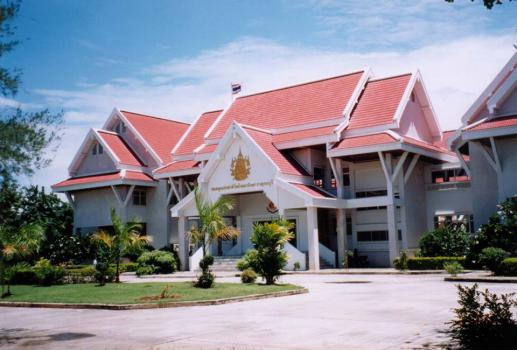

หอสมุดเมืองกรุงเทพมหานคร

หอสมุดเมืองกรุงเทพมหานคร
เป็นศูนย์กลางการเรียนรู้และการศึกษาที่สำคัญของประเทศไทย มีบทบาทในการเก็บรักษามรดกทางวัฒนธรรมและสารสนเทศของชาติ และเป็นแหล่งข้อมูลที่หลากหลายสำหรับการค้นคว้าวิจัย ศึกษา และสร้างสรรค์ผลงานในด้านต่างๆ เป็นสถานที่สำคัญด้านการศึกษาและวัฒนธรรมของประเทศไทย ก่อตั้งขึ้นในปี พ.ศ. 2476 ตั้งอยู่บนถนนสามเสน เขตดุสิต กรุงเทพมหานคร มีเป้าหมายเพื่อรวบรวม เก็บรักษา และเผยแพร่เอกสารสำคัญ หนังสือโบราณ และความรู้ในด้านต่าง ๆ ให้ประชาชนทั่วไป ภายในประกอบด้วยห้องสมุดหลากหลายประเภท เช่น ห้องสมุดทั่วไป ห้องสมุดเฉพาะทาง ห้องสมุดดิจิทัล และพื้นที่สำหรับการค้นคว้าหรือพักผ่อน นอกจากนี้ยังมีเอกลักษณ์โดดเด่นจากเอกสารโบราณ เช่น จารึก ใบลาน และหนังสือหายากที่หาไม่ได้จากที่อื่น หอสมุดแห่งชาติยังให้บริการที่หลากหลาย เช่น บริการยืม-คืนหนังสือ การจัดนิทรรศการเอกสารสำคัญ และฐานข้อมูลดิจิทัล เหมาะสำหรับผู้ที่ต้องการแหล่งเรียนรู้ที่เงียบสงบและมีข้อมูลครบถ้วน หอสมุดแห่งชาติถือเป็นศูนย์รวมมรดกทางปัญญาที่สำคัญของชาติ และเป็นสถานที่ที่สายการศึกษาและผู้รักการเรียนรู้ไม่ควรพลาด
การเดินทาง
เรือด่วนเจ้าพระยา: ลงที่ท่าเรือเทเวศร์ (N15) จากนั้นเดินหรือใช้บริการรถสองแถว/มอเตอร์ไซค์รับจ้างไปยังหอสมุด
โดยรถประจำทาง: สายรถเมล์ที่ผ่าน ได้แก่ สาย 3, 16, 30, 32, 49, 65, 524
ข้อมูลเพิ่มเติม
ที่ตั้ง: ถนนสามเสน แขวงวชิรพยาบาล เขตดุสิต กรุงเทพมหานคร 10300
เวลา:
- วันอังคาร - วันเสาร์: เปิดเวลา 09:00 - 18:00 น.
- วันอาทิตย์: เปิดเวลา 09:00 - 16:30 น.
- วันจันทร์และวันหยุดนักขัตฤกษ์: ปิดทำการ
ดูข้อมูล: https://www.nlt.go.th/